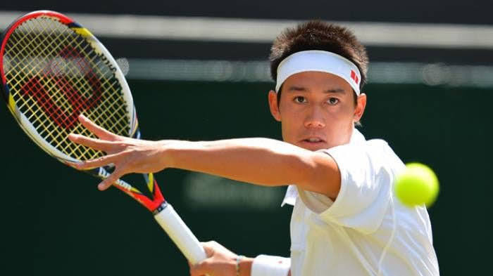

|  |
o Japão passou grande parte de sua história isolado do resto do mundo. |
|
Acredita-se que o tênis chegou ao Japão em 1878, quando cinco quadras foram construídas no Yamate Park em Yokohama para ser usada especialmente por estrangeiros. Em 1886, o tênis foi adotado por um professor da escola Normal de Tóquio, Tsuboi Gendo, que serviu como intérprete de George A. Leland (médico americano que ajudou diversas escolas japonesas a desenvolver um novo currículo de educação física durante o período de Meiji). No entanto, o equipamento de tênis no momento dependia de importações e era bastante caro. Por esta razão, surgiu o “soft tennis” (tênis suave), onde era usado uma bola flexível e de borracha fabricado no mercado interno. A partir de então, o soft tênis passou a ser jogado em praticamente todas as escolas públicas do país, sendo popular até os dias de hoje. |